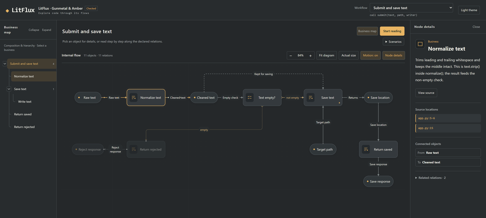
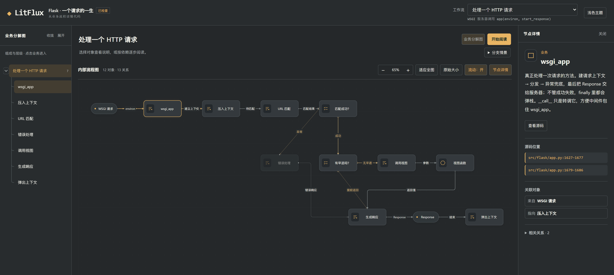

Business map
Which businesses make up the project, and which one contains which. Expand a level, enter a sub-business, step back out.
Agent skill for code comprehension
LitFlux lets a coding agent read real source and draw it as clickable business maps and internal flows. Every explanation is anchored to a file and a line, so you can check it instead of trusting it.
从业务流程读懂代码，沿着图找到源码。

A real build. 3 workflows · 51 objects · 45 relations · delivery state
checked. Left: business map. Middle: the internal flow of one business.
Right: the selected node and where it lives in app.py.
You do not have to read from line one to line ten thousand. Start from a business entry, follow the chain your question is about, open the code when you need it.
Which businesses make up the project, and which one contains which. Expand a level, enter a sub-business, step back out.
Input, processing, decisions and results for the current layer — branches, loops and data handoff drawn as declared relations.
Every node carries a file and line range. The excerpt is in the page, so a wrong explanation is something you can catch, not something you have to believe.
Flask's request lifecycle, from app(environ, start_response) to ctx.pop(error) — 12 objects, 13 relations, delivery state checked.

Read from source, not from memory. Every node links to a file and line in
src/flask/app.py or ctx.py.
Open the Flask case →
A skill file, a coding agent, and the repository you want to understand. No service to start, no code uploaded anywhere.
Give it the absolute path to skills/litflux/SKILL.md inside your clone of the repository.
Read <path-to-litflux>/skills/litflux/SKILL.md and use that skill to understand this project. Write an English tour and project map: main entries, key processing, branches, results. Read the source only — do not modify it and do not run the target application. Save under .litflux/output/ and report the HTML link, where to start reading and what is unfinished.
The agent traces entries and key behavior, then declares objects, relations and source ranges. The tool draws exactly that and checks declarations, geometry and implemented interactions.
Open the HTML, follow one workflow, hover for a one-line description, click for the full explanation and the source excerpt. Depth is yours to ask for.
The case is a full build — not a mockup. Open it, click around, and check whether the explanations match the code they point to.